What you will do
In this codelab, you're going to install an IDE for Scala development (IntelliJ) and write some simple Scala programs.
What you will learn
- How to install and setup JetBrains IntelliJ for Scala
- How to create a Scala project using IntelliJ and SBT
- How to write and run a basic class in Scala
- How to work with Scala Worksheets
There are many ways to start building Scala programs. One of the easiest is to use an IDE. IntelliJ is an IDE by JetBrains that supports Java, Kotlin, Scala and many other languages. We will be using IntelliJ throughout the course.
Installation
We will install the IntelliJ IDEA Community Edition. It is free and open-source. It works on Windows, macOS and Linux. Start by downloading and installing IntelliJ IDEA.
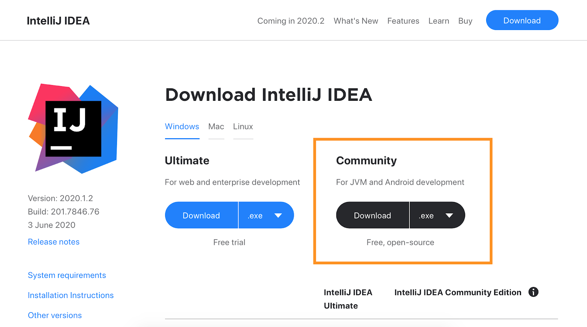
Follow the instructions for installing IntelliJ IDEA Community Edition.
Setup IntelliJ
On the first time you open IntelliJ, you will be prompted to set up the IDE. First choose your colour scheme: dark or light. Choose whichever you prefer!
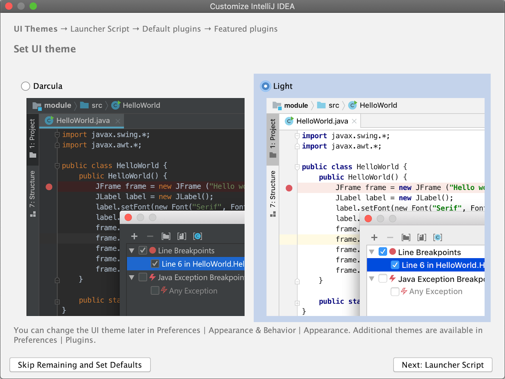
On the next step "Launcher Script", press "Next".
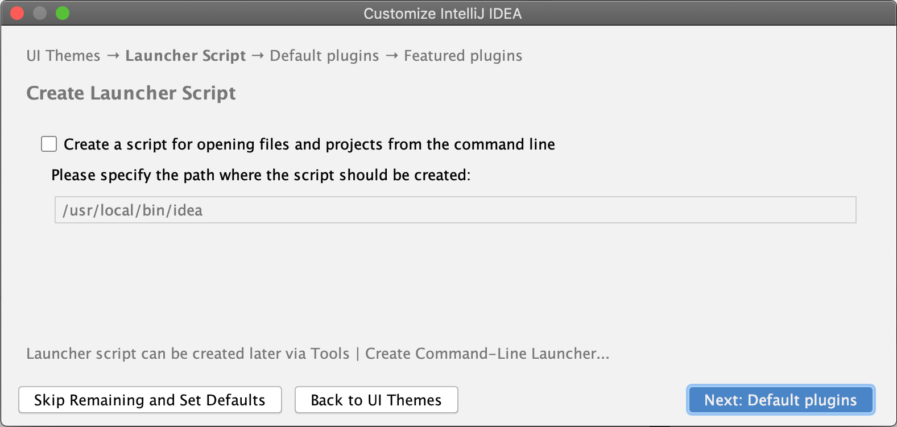
In the "Default plugins" step, you can disable plugins that you do not need. Press Disable for "Swing", "Android", "Other Tools" and "Plugin Development" to save hard drive space.
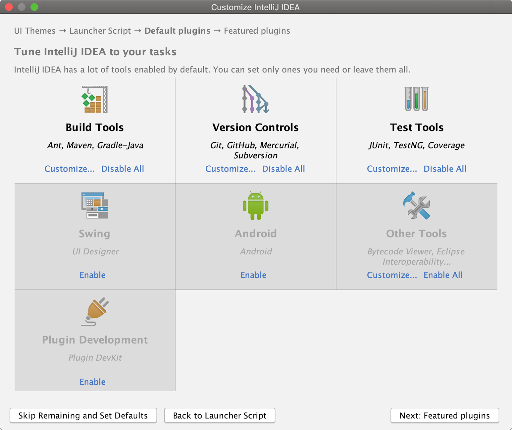
Finally, the most important step is to Install the "Scala" plugin.
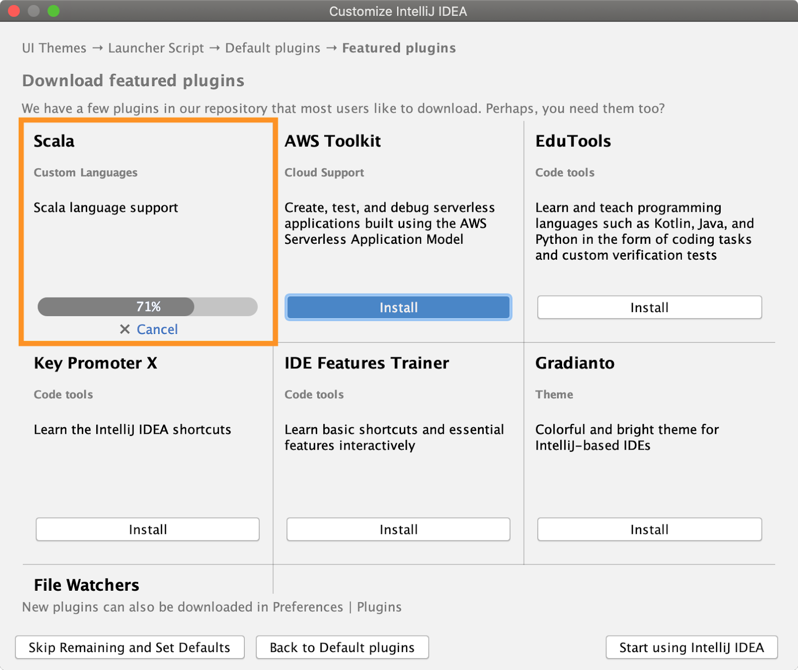
At the end your IntelliJ is configured!
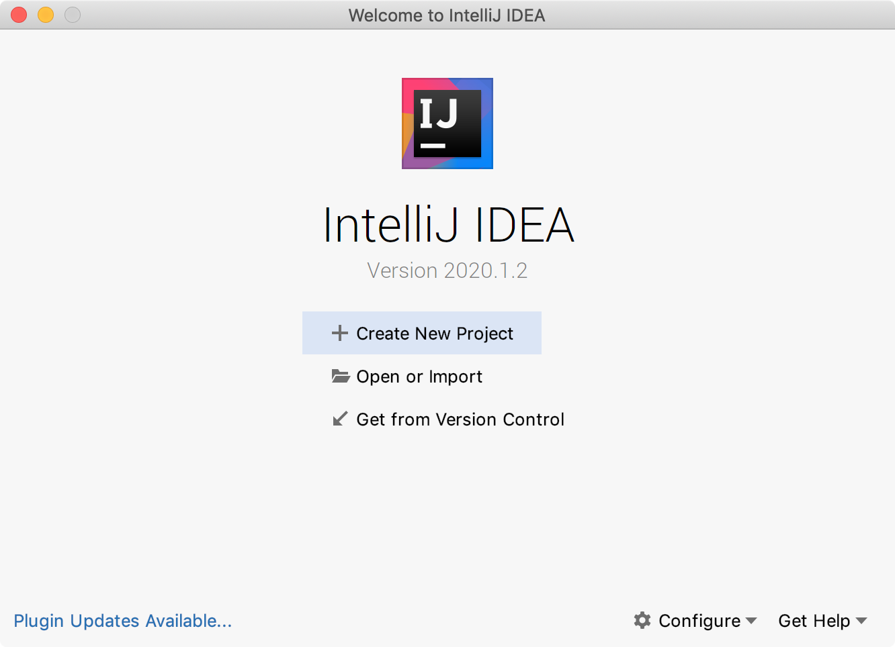
From the IntelliJ welcome screen, select Create New Project.
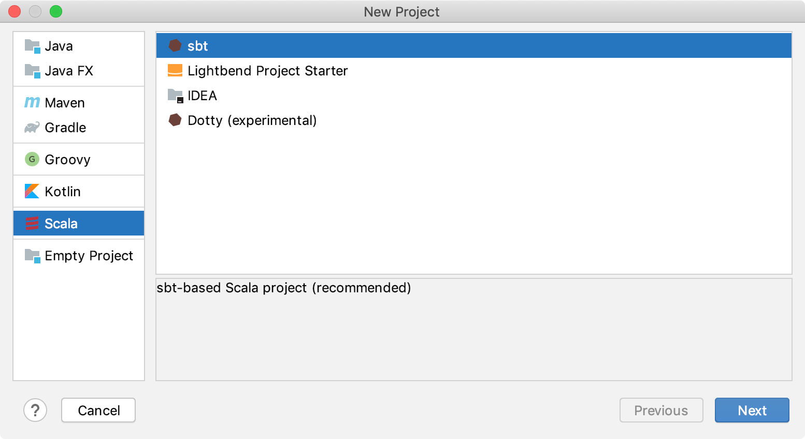
Then select Scala on the left, and sbt on the right, then Next.
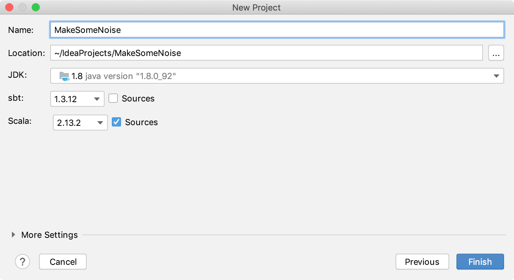
Give your project a name (e.g. MakeSomeNoise). Select the highest version number for JDK, sbt and Scala.
Press Finish.
Project syncing/build
Wait for the project to finish building.
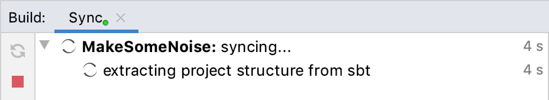
Look for the ✅.
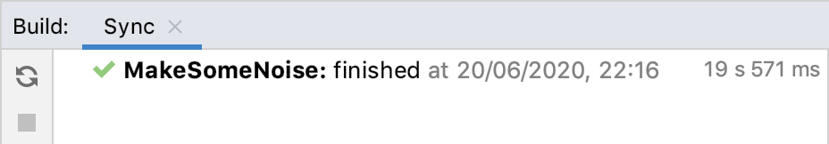
Project Structure
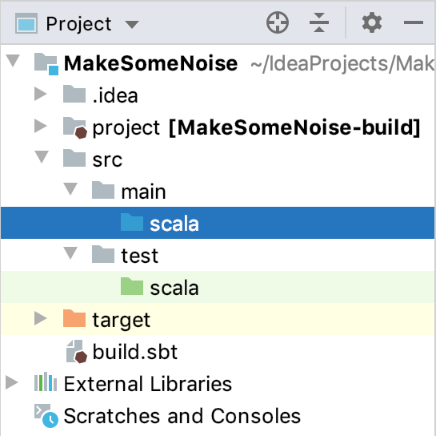
Your new project will contain:
.idea(IntelliJ files)project(plugins and additional settings for sbt)src(source files) -main/scala← Add code here!target(generated files)build.sbt(build definition file for sbt)
If you open the main/scala directory then you will see there is no code in the project yet. Let's add some in the next step.
1. Create the file
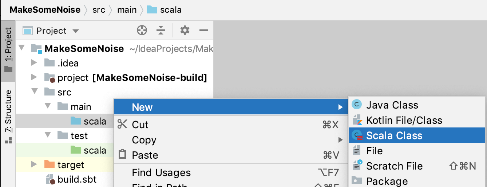
Right-click on src/main/scala,
- New
- Scala Class
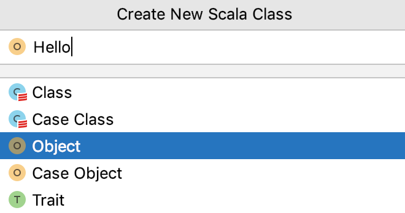
Create New Scala Class:
- Type
Hello - Press down arrow to select Object
- Press Enter
2. Make a main function
- Type
main - Press Enter
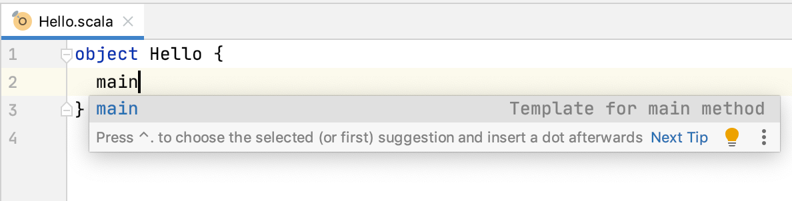

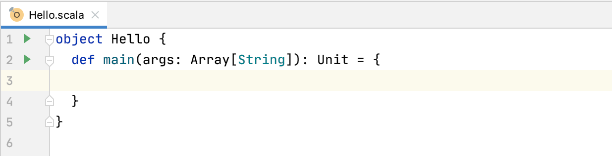
3. Add a print
Hello.scala
object Hello {
def main(args: Array[String]): Unit = {
println("Hello CSIT")
}
}4. Run
- Click the play ► button (next to
object Hello) - Select Run ‘Hello'
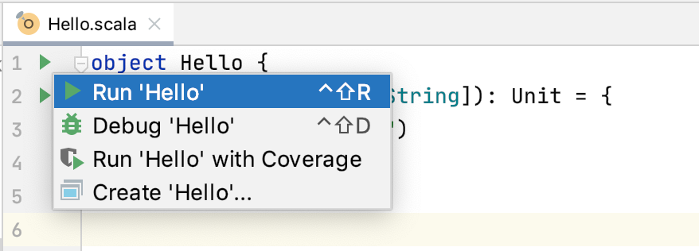
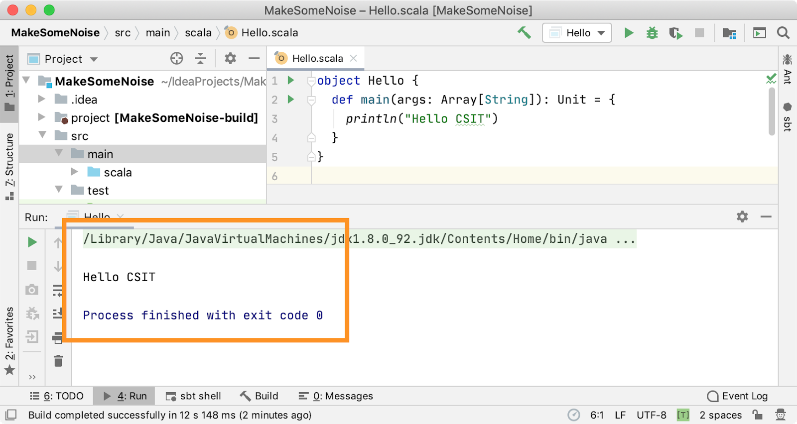
5. Remove main
Let's refactor. This is easier...
Hello.scala
object Hello extends App {
println("Hello CSIT")
}Run ‘Hello' again.
Another way to write Scala code is using Scala Worksheets.
Right-click on src/main/scala,
- New
- Scala Class
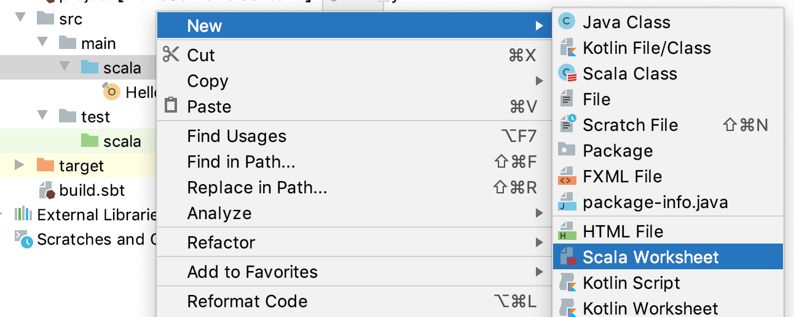
Give your worksheet a name:
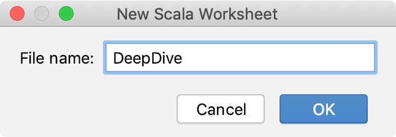
Write some code and press the play ► button (in the worksheet).
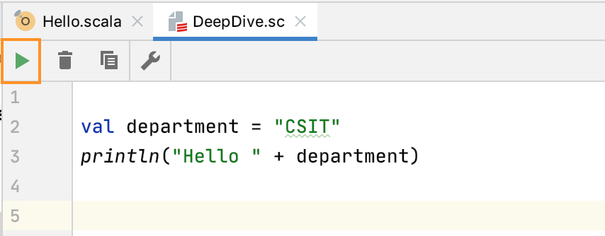
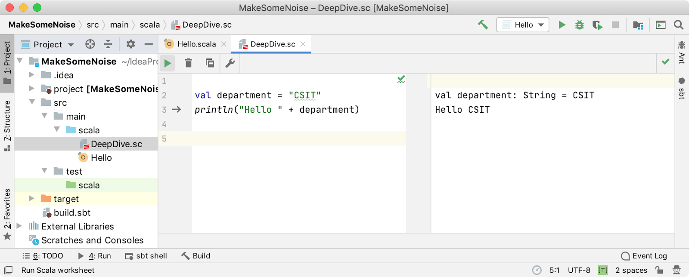
Worksheets are great for experimenting and trying out code. Next we will explore some Scala syntax.
Continue writing code in your DeepDive Scala Worksheet.
Values not variables
- Try to assign (change) the
departmentvalue to"Maths"
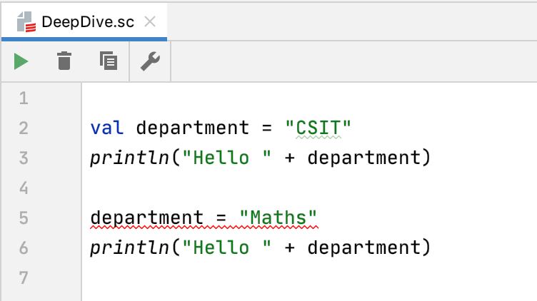
You cannot! → Good 😀
Loops on lists
In Java, we would have defined an array as int[] numbers = {1, 1, 2, 3, 5, 8}; and used a for loop to print out the numbers. We can do the same in Scala using lists.
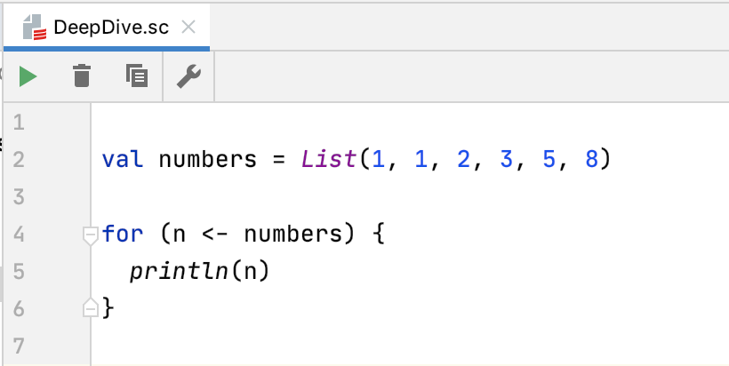
There are shorter and easier ways to loop a list in Scala. Try these:
DeepDive.sc
val numbers = List(1, 2, 3, 4, 5, 6)
for (n <- numbers) {
println(n)
}
numbers.foreach(n => {
println(n)
})
numbers.foreach({
println(_)
})
numbers.foreach(println(_))
numbers.foreach(println)Filtering a list
Now we understand that numbers.foreach(println) will print a list of numbers. What do these statements do?
DeepDive.sc
val numbers = List(1, 2, 3, 4, 5, 6)
numbers
.filter(n => n < 3)
.foreach(println)
numbers
.filter(_ > 2)
.foreach(println)
numbers
.filter(_ % 2 == 0)
.foreach(println)
numbers
.filter(_ % 2 == 0)
.filter(_ > 2)
.foreach(println)The filter function removes items from a list.
Modifying list items
The map function modifies each item of a list.
DeepDive.sc
val numbers = List(1, 2, 3, 4, 5, 6)
numbers
.map(_ * 2)
.foreach(println)
numbers
.map(n => n * n)
.foreach(println)
(1 to 10)
.map(n => n * n)
.filter(_ < 50)
.foreach(println)Create a new Scala Worksheet called Intro. Copy in the code below.
Intro.sc
val fruits = List(
"Apple",
"Banana",
"Cantaloupe",
"Cherry",
"Coconut",
"Grape",
"Guava",
"Strawberry",
"Lemon",
"Lime"
)Then write the code to print this:
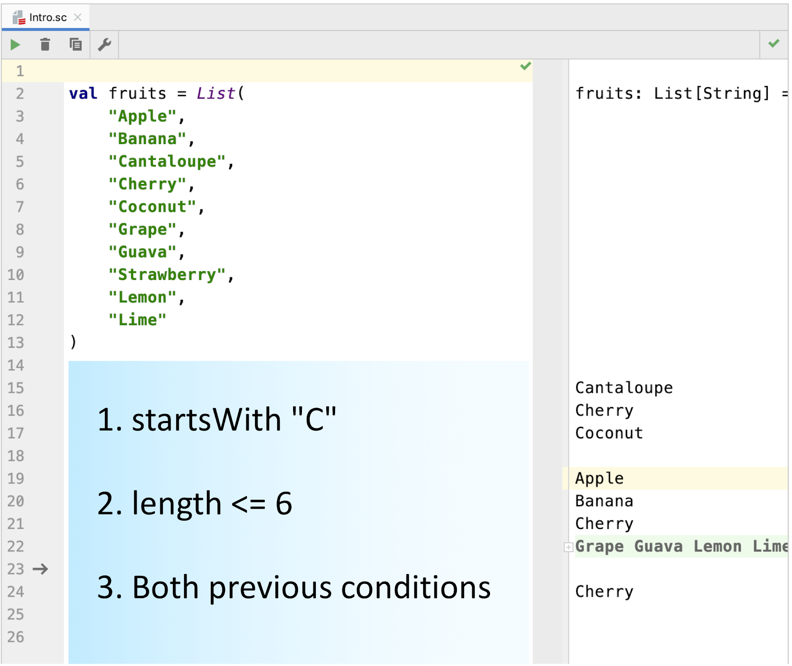
Congratulations, you've successfully written a Scala program!
Further reading
- Building a Scala project with IntelliJ and sbt
- Scala sbt Project Directory Walkthrough
- User manual and examples for sbt (simple build tool)
- Scala 101: a beginner's guide to the scalable language
- Introduction to Scala Programming ตอนที่ 1
- Functional Programming #1 : ก้าวแรก